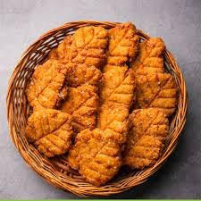
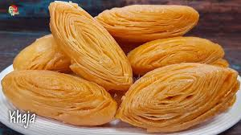
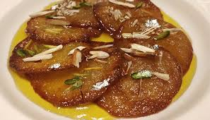

Bihar is known for its rich and diverse food culture. From spicy and tangy flavors to sweet delicacies, Bihari cuisine offers a variety of traditional dishes that have been passed down through generations. These dishes are not only famous in Bihar but are also loved by people across India. Below are some of the most iconic foods of Bihar that you must try.

Litti Chokha is the soul of Bihari cuisine. This dish is made of wheat flour dough balls stuffed with spiced roasted gram flour (sattu), baked over an open flame or traditional cow dung cakes, and then dipped in pure desi ghee. It is served with **Chokha**, which is a mixture of mashed potatoes, roasted brinjal, and tomatoes with mustard oil and spices. The smoky flavor of Litti combined with the tangy and spicy Chokha makes it an irresistible dish. It is a staple food of Bihar and is enjoyed throughout the state, especially during special occasions and festivals.

Thekua is a traditional sweet snack made from wheat flour, jaggery, and grated coconut, deep-fried in ghee or oil. It has a crispy texture on the outside and a soft, sweet flavor on the inside. Thekua is an essential part of the **Chhath Puja** celebrations, where it is offered as a prasad to the Sun God. The jaggery in Thekua gives it a natural sweetness and a rich taste. Even after cooling, it remains crispy and tasty, making it a perfect travel snack. This sweet delicacy holds a special place in every Bihari household.

Khaja is a crispy and flaky dessert that has been a part of Bihari cuisine for centuries. Made from refined flour, sugar, and ghee, it is deep-fried and then dipped in sugar syrup, which gives it a crunchy yet melt-in-the-mouth texture. This sweet treat is especially popular in the **Mithila region** of Bihar and is commonly found at weddings and festivals. Khaja is also one of the offerings at the famous **Prasad of Baba Baidyanath Temple in Deoghar**. The layered, golden-brown crispy texture of Khaja makes it a unique and delightful sweet of Bihar.

Dal Pitha is Bihar’s answer to dumplings! This dish is made by stuffing rice flour dough with a spiced lentil filling (usually made of chana dal or urad dal) and then steaming it to perfection. Dal Pitha is not only delicious but also healthy as it is steamed instead of fried. It is often served with chutney or pickles and is a great alternative to deep-fried snacks. This dish is enjoyed as an evening snack or breakfast and is widely prepared during festive seasons.

Malpua is a rich, deep-fried, and sugar-soaked sweet pancake made from flour, milk, and sugar. It is often flavored with cardamom and topped with chopped dry fruits. Malpua is commonly prepared during **Holi and Teej festivals** in Bihar. The outer crust is crispy while the inside remains soft and juicy, making it a favorite dessert for people with a sweet tooth. Some variations include adding mashed bananas to the batter, enhancing the flavor and making it even more delicious.
These are just a few of the delicious foods from Bihar. Each dish carries the essence of the state's rich history and culture. Whether you are a fan of savory delights like Litti Chokha or have a sweet craving for Thekua and Malpua, Bihari cuisine has something to offer for everyone. If you ever visit Bihar, make sure to indulge in these mouth-watering dishes and experience the authentic taste of Bihar.